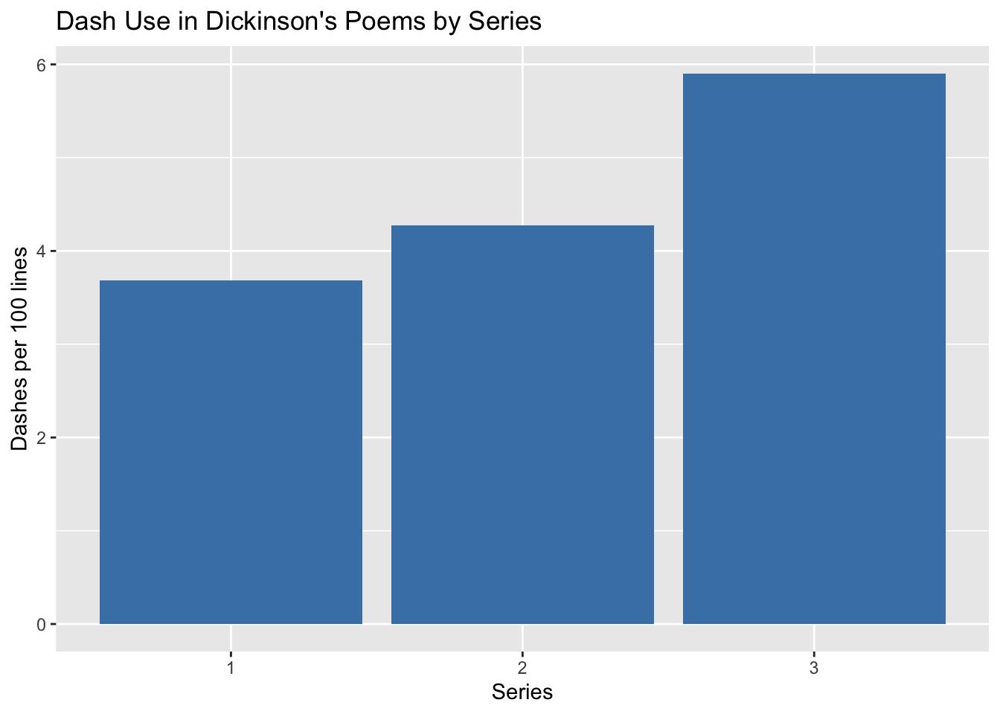
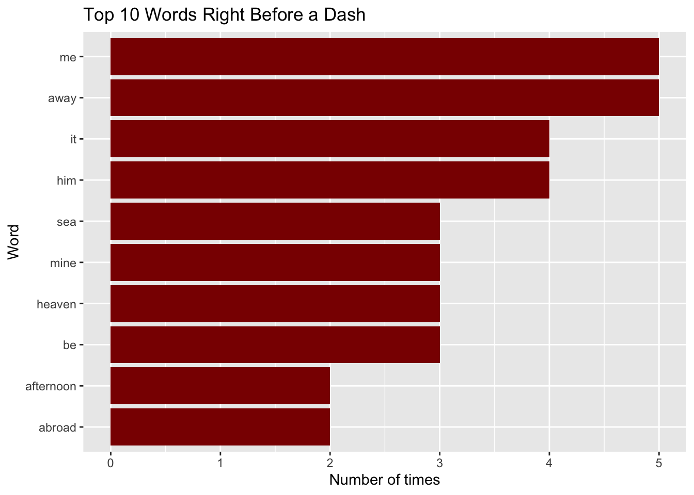

dash_counts <- dickinson |>group_by(series) |>summarize(total_dashes =sum(str_count(line, "--|—")),total_lines =n()) |>mutate(dashes_per_100 = total_dashes / total_lines *100)ggplot(dash_counts, aes(x = series, y = dashes_per_100)) +geom_col(fill ="steelblue") +labs(title ="Dash Use in Dickinson's Poems by Series",x ="Series", y ="Dashes per 100 lines")

Show code
before_dash <- dickinson |>mutate(word =str_extract_all(str_to_lower(line), "[a-z]+(?=[,;:.!?]?\\s*(--|—))")) |>unnest(word) |>count(word, sort =TRUE) |>slice_head(n =10) |>mutate(word =fct_reorder(word, n))ggplot(before_dash, aes(x = n, y = word)) +geom_col(fill ="darkred") +labs(title ="Top 10 Words Right Before a Dash",x ="Number of times", y ="Word")

The first plot shows how many dashes Dickinson used per 100 lines in each series. It goes up every time: about 3.7 in Series 1, 4.3 in Series 2, and 5.9 in Series 3. The preface says she used dashes instead of most other punctuation, so this makes sense.
In the second plot, “me” and “away” come right before a dash the most (5 times each), then “it” and “him” (4 times). A lot of these are short pronouns, so her dashes seem to land at the end of short phrases. Words like “away,” “sea,” “heaven,” and “abroad” also fit the themes of distance and death from the preface.
Original source: Dickinson E. Poems by Emily Dickinson, Series One, Two, and Three. Edited by Todd ML and Higginson TW. Project Gutenberg, https://www.gutenberg.org.
Source Code
---title: "Dickinson Poems"description: | Analysis of Dickison Poems data from TidyTuesdayauthor: Davina Liudate: October 11, 2026format: html: code-fold: true code-summary: "Show code" code-tools: trueexecute: message: false warning: false---```{r}library(tidyverse)folder <-system.file("extdata", package ="DickinsonPoems")files <-list.files(folder, pattern ="gutenberg", full.names =TRUE)dickinson <-tibble(file = files) |>mutate(line =map(file, readLines)) |>unnest(line) |>filter(str_detect(line, "[A-Za-z]")) |>mutate(series =str_extract(file, "(?<=gutenberg)[0-9]"))``````{r}dash_counts <- dickinson |>group_by(series) |>summarize(total_dashes =sum(str_count(line, "--|—")),total_lines =n()) |>mutate(dashes_per_100 = total_dashes / total_lines *100)ggplot(dash_counts, aes(x = series, y = dashes_per_100)) +geom_col(fill ="steelblue") +labs(title ="Dash Use in Dickinson's Poems by Series",x ="Series", y ="Dashes per 100 lines")``````{r}before_dash <- dickinson |>mutate(word =str_extract_all(str_to_lower(line), "[a-z]+(?=[,;:.!?]?\\s*(--|—))")) |>unnest(word) |>count(word, sort =TRUE) |>slice_head(n =10) |>mutate(word =fct_reorder(word, n))ggplot(before_dash, aes(x = n, y = word)) +geom_col(fill ="darkred") +labs(title ="Top 10 Words Right Before a Dash",x ="Number of times", y ="Word")```The first plot shows how many dashes Dickinson used per 100 lines in each series. It goes up every time: about 3.7 in Series 1, 4.3 in Series 2, and 5.9 in Series 3. The preface says she used dashes instead of most other punctuation, so this makes sense.In the second plot, "me" and "away" come right before a dash the most (5 times each), then "it" and "him" (4 times). A lot of these are short pronouns, so her dashes seem to land at the end of short phrases. Words like "away," "sea," "heaven," and "abroad" also fit the themes of distance and death from the preface.**Data source:** [DickinsonPoems R package (Amherst-Statistics)](https://github.com/Amherst-Statistics/DickinsonPoems)**Original source:** Dickinson E. *Poems by Emily Dickinson, Series One, Two, and Three.* Edited by Todd ML and Higginson TW. Project Gutenberg, <https://www.gutenberg.org>.